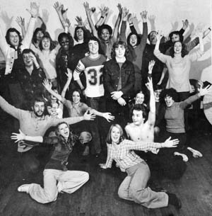

Genesis Theatre was an amateur theatre group from the late 70's and early 80's. This site is dedicated to keeping the memory of such a great group alive.
Latest Updates
Fri, 9th Aug 2019 - Added Music from the show: Stag
Sun, 21st Jul 2019 - Added Bereavements with Bez Beswarick
Tues, 02 Feb 2014 - Added Alan Ratcliff's Biography
Thu, 29 Mar 2012 - Added Anita King's Biography
Sun, 15 Jan 2012 - Added Chris Fogg's Biography
Sun, 06 July 2008 - Added Guy Taylor's Biography
Tue, 27 Feb 2007 - Welcome to the new Genesis Theatre website
Tue, 27 Feb 2000 - Test 2